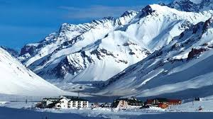
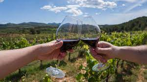

Penitentes

Bodegas

Valle de Uco

Recorre la legendaria Ruta 7 a través de los Andes con este
tour de un día
completo
desde
Mendoza.
Explora montañas con guía local, visitando sitios como el lago Potrerillos,
Uspallata,
Penitentes, Puente del Inca, Las Cuevas y Parque Aconcagua para realizar
impresionantes
fotografías.
Disfruta del desayuno en Upsallata y un almuerzo tradicional de especialidades
regionales como la
trucha o la cabra.
Degusta los vinos de Mendoza con un tour privado. Recogiendote
en la
dirección
que
elijas en la ciudad de Mendoza y emprenderemos una excursión de un día completo
a tres
bodegas
diferentes. Aprende sobre la elaboración del vino en Argentina durante las
degustaciones
guiadas y
completa la experiencia con un almuerzo gourmet.
A solo 90 minutos de Mendoza, el Valle de Uco se celebra
internacionalmente
por
sus
vinos de gran
cuerpo. Disfruta del transporte privado desde Mendoza mientras tu guía comparte
información sobre
esta
pintoresca región vinícola. Tendrá la oportunidad de recorrer varios viñedos,
degustar
vinos locales
y
disfrutar de un almuerzo con maridajes antes de su regreso a Mendoza.